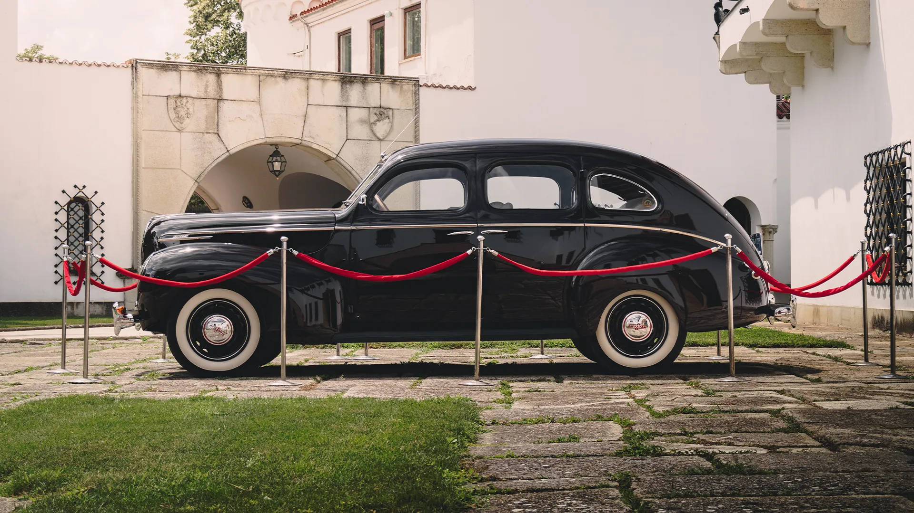
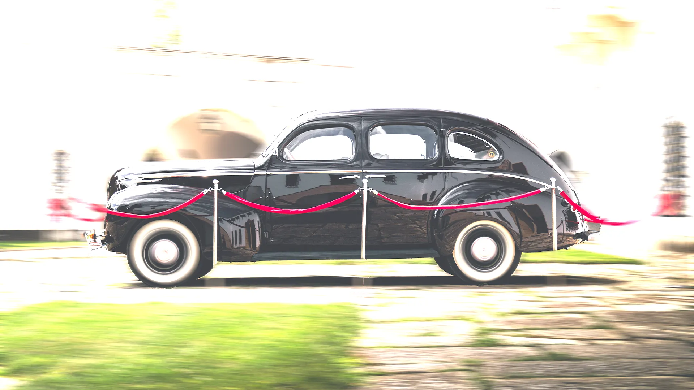
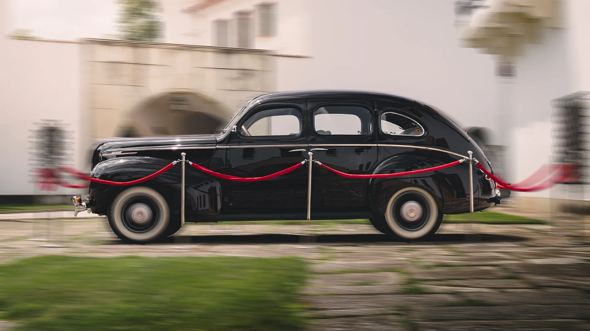
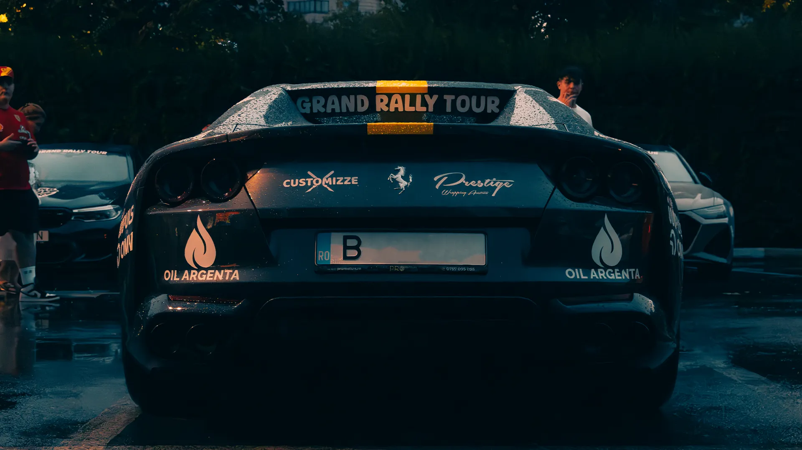
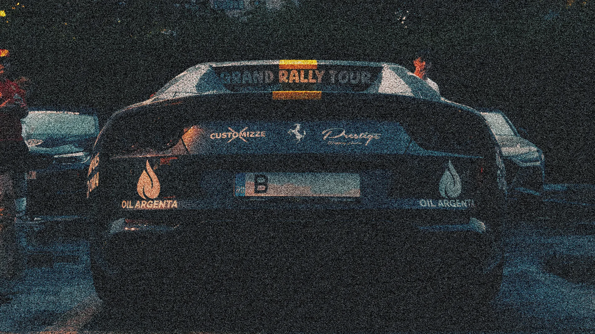
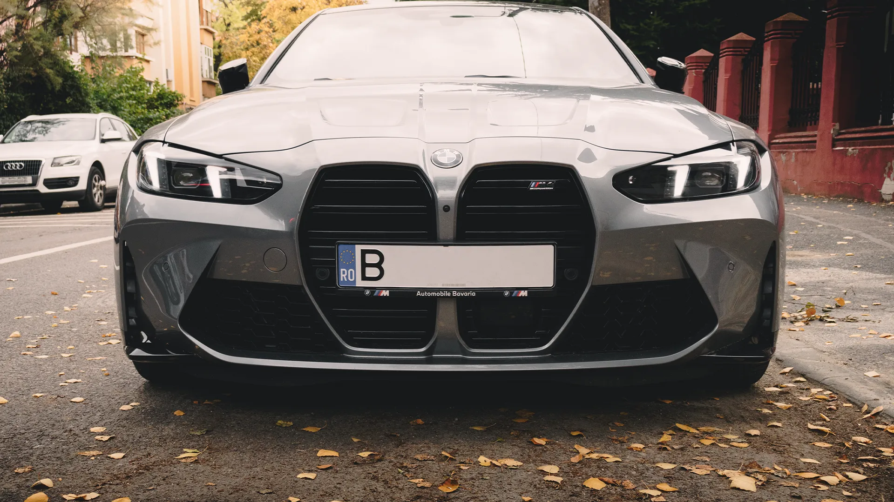
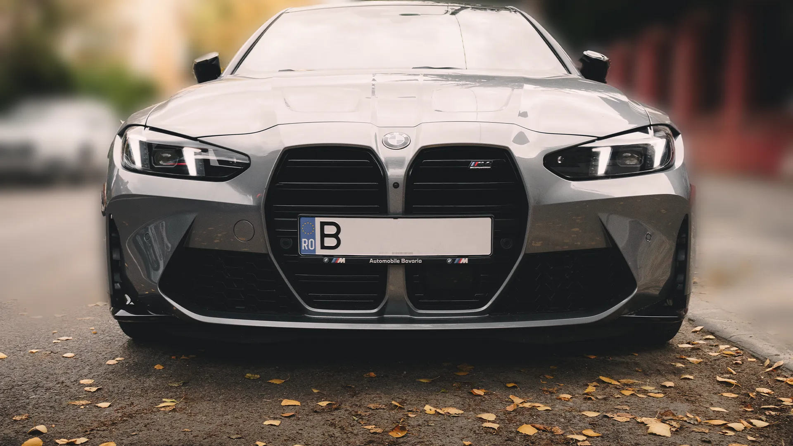

Shutter Speed



Imaginea se modifică în funcție de viteza obturatorului și filtrul ND.
ISO


Imaginea primește efect de granulație la valori mari ISO.
F-Stop


Imaginea devine mai blurată la valori mici de F-Stop.